-
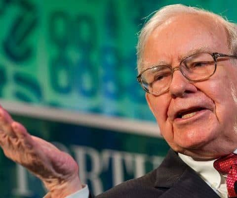
워런 버핏
-
"1930년 8월 30일 미국 오마하 출생. 미국 투자가, 자본가, 자선가다. 세계에서 가장 성공한 투자가로 널리 존경받고 있다. 흔히 전설적인 투자가로 불리며, 버크셔 해서웨이의
대주주이자 회장 겸 CEO다. 늘 세계 최고의 부자로 꼽히고 있으며, 2008년에는 세계 1위였고 2011년에는 세계 3위다. 버핏은 '오마하의 현인'으로도 불리며, 가치투자철학을
고수하면서 대부호인데도 검소하게 사는 인물이다. 탁월한 자선가이기도 해서, 재산의 99퍼센트를 주로 게이츠재단을 통해서 기부하기로 약정했다."
-
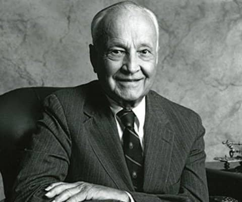
존 템플턴
-
"'월스트리트의 살아 있는 전설'이자 '영적인 투자가'로 불리는 존 템플턴은 1912년 미국 테네시주의 작은 마을 윈체스터에서 태어나 예일 대학교를 수석으로 졸업한 뒤 로즈 장학금을 받아
영국 옥스퍼드 대학교에서 경제학을 전공했다. 1954년 Templeton Growth 사를 설립하여 투자 범위를 세계 전체로 확대하며 글로벌 펀드라는 새로운 분야를 개척했다. 투자가로서의
활동과 함께 종교 활동도 병행하여 프린스턴 신학교의 이사와 학장을 역임하였다. 1973년 '템플턴 상'을 제정하고 1987년 존 템플턴 재단을 설립하며 사회봉사 활동에서도 큰 업적을
남겼다. 테레사 수녀를 비롯한 여러 종교 지도자에게 수여되는 템플턴 상은 노벨상과 동등한 정도의 명예를 지닌다. 박애주의를 실천한 공로를 인정받아 영국 여왕으로부터 기사 작위를
수여받았다."
-
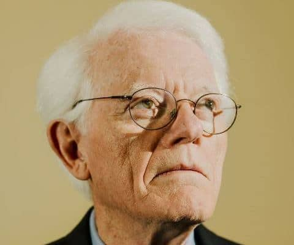
피터 린치
-
"피터 린치는 살아 있는 월스트리트의 전설로 통하는 투자자다. 1967년부터 1969년까지 한국에서 포병대 중위로 근무한 바 있다. 마젤란펀드를 2천만 달러에 인수한 후 13년간 운용하여
660배에 달하는 140억 달러 규모의 뮤추얼펀드로 성장시켰다. 발로 뛰어야만 기업에 대한 고급정보를 얻을 수 있다는 소신으로 시간과 노력을 아낌없이 들이는 투자자로 유명하다.
펀드매니저로 재직하는 동안 1만 5천 개에 달하는 주식에 투자했다. 한창 전성기인 47세에 돌연 은퇴를 선언하여 월가의 전설적 인물이 되었다. 저서로는 《피터 린치의 이기는
투자Beating the street》, 《증권투자로 돈 버는 비결Learn to earn》이 있다."
-
조지 소로스
-
"세계 금융계의 큰손이자 20세기 최고의 펀드매니저로 손꼽히고 있는 조지 소로스는 1930년 헝가리 부다페스트에서 부유한 변호사의 아들로 태어났다. 독일 나치의 대량 학살 위협에서
가까스로 목숨을 건진 뒤 1947년에 영국으로 탈출했다. 이후 그는 철도역의 짐꾼, 여행 세일즈맨, 웨이터 등을 하며 갖은 어려움을 이겨내고 런던정경대학LSE에 입학했다. 그리고 이곳에서
세계적인 과학철학자 칼 포퍼를 만나 배움을 얻는다. 그가 1969년에 짐 로저스와 함께 세운 퀀텀펀드는 400만 달러로 시작해 1989년까지 20년간 연평균 수익률 34퍼센트를 기록하며
헤지펀드의 역사에 새로운 장을 열었다. 현재 그는 퀀텀펀드 등의 지주회사 격인 소로스펀드매니지먼트Soros Fund Management의 회장을 맡고 있다."
-
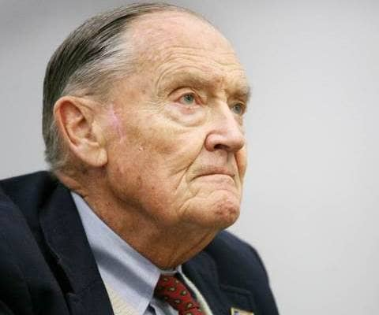
존 보글
-
"존 보글은 월스트리트의 전설적인 인물이며, 세계 금융계에 대한 위대한 공헌과 투자자의 이익을 최우선하는 철학 때문에 '월스트리트의 성인(St. John)'으로 추앙받고 있다.
뮤추얼펀드에 관한 최초의 논문 발표자라는 영광을 안고 프린스턴 대학을 2등으로 졸업했으며 1974년 뱅가드 그룹을 설립하여 1996년까지 CEO와 회장으로 재직하였으며 이후 2000년까지
명예회장을 지냈다. 1975년 세계 최초의 인덱스펀드인 '뱅가드500 인덱스펀드'를 개발하였으며, 이는 매년 30%가 넘는 엄청난 수익률을 거두며 수많은 투자자들이 재산을 증식하는 데
도움을 주었다. 현재 뱅가드 그룹은 120개가 넘는 펀드로 1조 달러에 이르는 자산을 운용하며 피델리티 다음가는 세계적인 자산운용사로 우뚝 섰다."
-
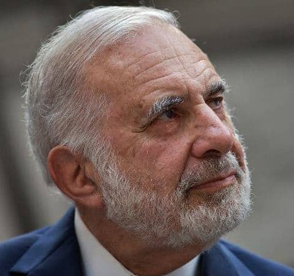
칼 아이칸
-
"칼 아이칸은 행동주의 투자자 혹은 악랄한 기업사냥꾼이라고 불리우는 미국의 투자자이다. 프린스턴 대학에서 철학을 전공한 그는 저평가된 주식을 발굴해내 단기간에 어마어마한 수익을 올리기로
유명하다. 대주주에게 경영권을 담보로 시가보다 비싸게 되사가도록 압박(그린메일)을 통해 부를 축적하였고, M&A 제안, CEO교체, 기업 구조 변경 등 직접 경영에 간섭하기도 한다.
아이칸 엔터프라이즈의 창업자이자 대주주이기도 한데, 도널드 트럼프 대통령은 아이칸에게 경제 규제에 대한 특별 고문이 되어 달라고 요청했었다."
-
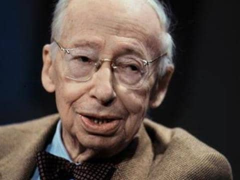
앙드레 코스톨라니
-
"1906년 헝가리에서 태어났다. 18세에 파리로 건너와 증권계에 입문하였다. 뛰어난 판단력과 소신으로 일찍이 큰돈을 번 코스톨라니는 70년이 넘는 세월을 순종 투자자라는 자유 직업가로서
투자라는 '지적 모험'을 즐겼으며 10여 권이 넘는 투자관련서를 저술하였다. 투자라는 천직과 함께 예술가적 자질을 타고난 그는 유려하고 재치 있는 문장으로 어려운 투자 이야기를 재미있게
풀어쓰는 명 칼럼니스트로 명성을 날리기도 했다. 수많은 강연과 글을 통해 그가 투자자들에게 하는 충고는 다음 한 가지로 요약된다. '생각하는 투자자가 되십시오.'"
-
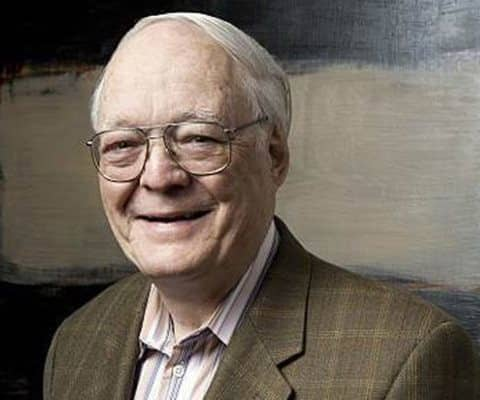
존 네프
-
"존 네프는 워렌 버핏, 피터 린치와 함께 월스트리트의 ‘3대 전설’로 꼽힌다. 1995년 미국 포춘 Fortune이 실시한 설문조사에서는 현직 펀드매니저들이 존 네프를 ‘자신의 자산을
가장 맡기고 싶은 펀드매니저’로 꼽았다. 그는 31년간 하나의 펀드를 운영하며 누적수익률 5546.4%를 기록했는데, 30년이 넘도록 시장 평균 수익률을 상회한 기록은 앞으로 다시는
나오기 힘든 대기록으로 평가된다."
-
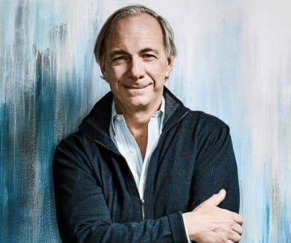
레이 달리오
-
"레이 달리오는 이 시대 가장 위대한 투자자이자 기업가다. 1975년 방 두 개짜리 아파트에서 브리지워터 어소시에이츠를 설립해 40년 만에 세계 최대 규모의 헤지펀드로 성장시켰다. 레이
달리오는 2007년 글로벌 금융 위기를 예측한 것으로 유명하며, 그의 혜안 덕분에 브리지워터는 놀랄 만큼 높은 수익을 꾸준히 내는 세계적인 헤지펀드로 성장했다. 그는 타임지가 선정한
세계에서 가장 영향력 있는 100대 인물에 선정됐을 뿐만 아니라 포춘이 선정한 세계 100대 부자에 이름을 올렸다. 최근에는 투자의 제왕 조지 소로스의 수익률을 제치며 헤지펀드의 역사를
새롭게 썼다. ‘이코노미스트’라고 불릴 만큼 경제 흐름에 정통한 그는 세계 언론이 앞 다투어 경제 전망에 대한 의견을 구하려고 하는 투자자이기도 하다."
-
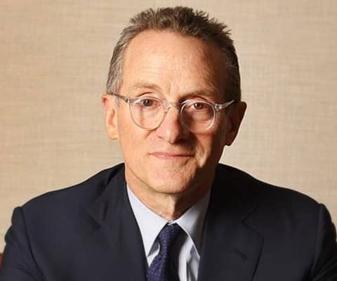
하워드 막스
-
"하워드 막스는 오크트리캐피털매니지먼트의 회장이자 공동 설립자로, 시장 기회와 리스크에 대해 통찰력이 돋보이는 평가로 잘 알려진 인물이다. 그가 메모 형식으로 고객들에게 보내는 편지는
날카로운 논평과 오랜 세월에 걸쳐 유효성이 입증된 철학으로 가득하다. 1995년 오크트리캐피털 설립 이래 회사의 핵심 투자 철학을 고수하고 상품 및 투자 기회에 대해 고객들과 긴밀하게
소통하며 회사를 경영하는 데 전념해왔다."
-
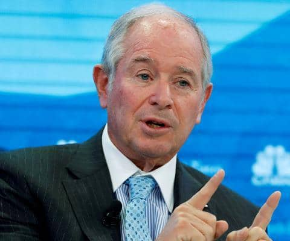
스티븐 슈워츠먼
-
"스티븐 슈워츠먼은 자본금 40만달러로 창업한 ‘블랙스톤’(Blackstone)을 35년이 지난 현재 운용자산 5380억달러(약 660조원)로 약 130만배나 키운 미국 최고의
자본가이다. 그는 월스트리트의 비주류로 취급받던 사모펀드를 주된 비즈니스 모델로 삼아 ‘연평균 수익률 50퍼센트’라는 놀라운 성장력을 보인 실패를 모르는 승부사이기도 하다. 저자 스티븐
슈워츠먼은 블랙먼데이, 저축대부조합 파산과 부동산 시장 폭락, 닷컴 버블 붕괴, 서브 프라임 모기지 사태와 글로벌 금융위기 같은 경기 침체기를 겪으면서도 손대는 거래마다 거의 손실을 내지
않고 승승장구해 ‘월스트리트의 황제’, ‘사모펀드의 제왕’으로 불리며 세계 투자자들의 선망을 받는다."
-
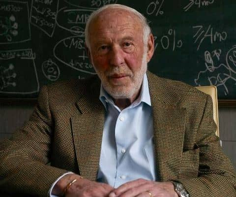
제임스 사이먼스
-
"제임스 사이먼스는 수학교수 출신의 퀀트 투자자이다. 1938년생으로 2021년 포브스 자료에 의하면 그의 자산은 약 28조원이다. 통계와 데이터 분석을 통해 컴퓨터를 통한 과학적인
매매인 퀀트(Quant) 기법을 투자업계에 도입하여 월 스트리트를 평정한 인물이기도 하다. 그는 과학적 사고를 투자에 도입해서 성공하겠다는 일념으로 40대의 늦은 나이에 월 스트리트에
진출했다. 1978년에 그가 만든 퀀트 투자회사 르네상스 테크놀로지(Renaissance Technology) 의 메달리온 펀드는 30년간 연평균 수익률 39%, 1천억달러 이상의 수익을
거두며, 연봉을 2조를 받는 세계 최고의 헤지펀드 매니저가 됐다."
-
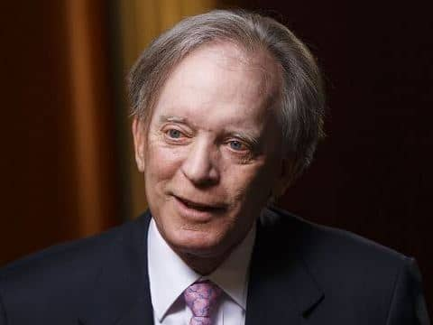
빌 그로스
-
"빌 그로스는 PIMCO(핌코)의 공동설립자이자 전 CIO(최고투자책임자)다. PIMCO는 기관 및 개인투자자들이 맡긴 9백억 달러 상당을 관리하는 세계 최대의 채권 투자기관으로,
1974년부터 연평균 11%가 넘는 압도적인 수익률을 기록해왔다. 그는 다른 누구보다 먼저 채권시장에 숨어 있는 기회를 찾아낸다. 그가 만들어낸 가장 큰 성과는 채권도 적극적으로 매입과
매도를 지속하면 총수익(total return)을 높일 수 있다는 사실을 증명한 것이다. 그로스는 채권투자에 있어서 처음으로 총수익의 개념을 도입했다. 그는 현재 명실상부한 채권계의 최대
거물로 ‘채권왕’이라는 별명으로 불린다."
-

짐 로저스
-
"짐 로저스(Jim Rogers)는 금융계의 '인디애나 존스'로 불린다. 1942년 10월, 미국 앨라배마주 데모폴리스에서 태어난 그는는 예일대학교, 옥스퍼드의 밸리올 칼리지Balliol
College에서 수학했다. 졸업 후에는 군복무를 마치고 월스트리트에서 일하다가 조지 소로스와 함께 글로벌 투자사인 퀀텀펀드를 설립했다. 퀀텀펀드는 4,200%라는 경이적인 수익률을
기록했다. 그는 자신의 포트폴리오를 계속 관리하면서 컬럼비아대학교의 금융학 교수로 재직했고, 금융관련 방송 프로그램 사회자로도 활약했다. 또한 오토바이 세계일주 여행에 나서 52개국에
걸쳐 약 16만 킬로미터를 주파하여 기네스북에 올랐다. 이 여정의 기록을 담아 펴낸 책이 '월가의 전설 세계를 가다Investment Biker'이다. 그의 다음 기네스 기록 동안에는
아내와 함께 116개 나라와 전 세계 30개의 내전 지역 중 절반을 지나며 약 25만 킬로미터를 달렸다."
-
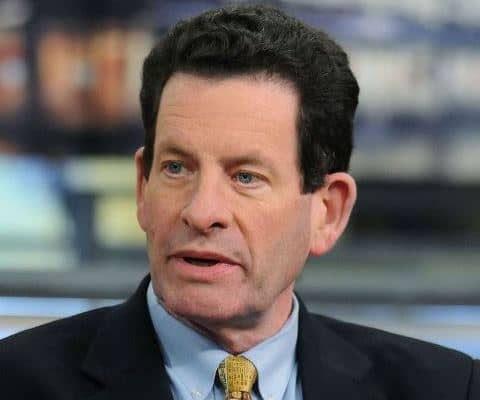
켄 피셔
-
"켄 피셔는 성장주 투자의 대가 필립 피셔의 아들이다. 대학에서 경제학을 전공한 그는 졸업 직후 아버지 회사에서 실력을 쌓았으며, 1979년에 독립하여 피셔 인베스트먼트를 설립하였다.
글로벌 머니 매니지먼트 회사인 피셔 인베스트먼트는 현재 전 세계적으로 450억 달러 이상을 운용하고 있다. 2007년에는 <포브스>가 선정한 ‘미국 400대 부자’ 중 271위, 세계
억만장자 리스트에서 677위를 차지했다. 미국의 유력 경제전문지 <포브스>에 기고하는 칼럼 ‘포트폴리오 전략(Portfolio Strategy)’으로도 잘 알려져 있으며, 뛰어난
시장 예측으로 25년째 독자들의 좋은 반응을 얻고 있다. 수많은 학술 논문으로 상을 받기도 했으며, 영국의 <블룸버그 머니>를 포함, 경제와 금융 관련 매체에 자주 기로를
하고 있다."
-
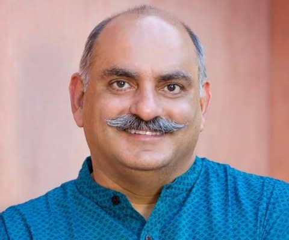
모니시 파브라이
-
"모니시 파브라이는 1950년대 워런 버핏이 설립했던 ‘버핏 파트너십’을 벤치마킹한 헤지펀드 사인 ‘파브라이 인베스트먼트 펀드’의 대표이자 버핏의 열렬한 추종자이기도 하다. 또한 가치
투자를 한 단계 발전시켰다는 '단도'투자로 유명하다. 그가 이끄는 헤지펀드인 ‘파브라이 인베스트먼트 펀드’의 수익률은 모든 주요 지수의 증가율을 앞질렀다. 뿐만 아니라 이 펀드는 현재
미국에서 운용되는 전체 펀드들 가운데서도 상위 1퍼센트에 속하는 높은 수익률을 기록하고 있다. 1999년에 이 펀드에 투자한 100,000달러는 2006년에 659,000달러로 늘어났다.
경비와 수수료를 제하고도 투자자는 연 28퍼센트라는 놀라운 수익을 얻었다."
-
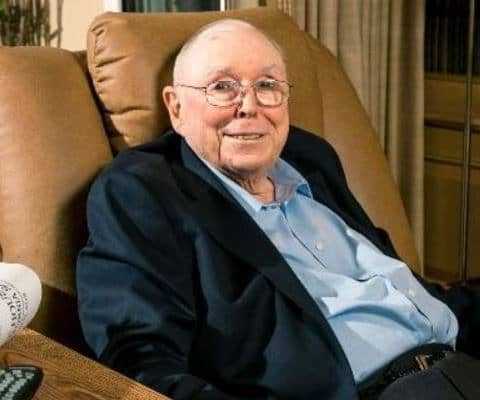
-
"찰리 멍거는 미국의 억만 장자 투자자, 사업가, 전 부동산 변호사, 건축 설계자 및 박애주의자이다. 하버드 로스쿨을 우등으로 졸업한 그는 1978년 워런 버핏이 관리하는 투자지주회사
Berkshire Hathaway의 부회장이 됐고, 이후 40년이 넘는 시간 동안 버핏의 위대한 동업자이자 오른팔로써 회사를 함께 키워 나갔다. 그는 평소 격자틀 정신모델 이론을 내세우며
투자자들에게 다양한 분야에 걸쳐 지식과 지혜를 쌓으라고 권한다."